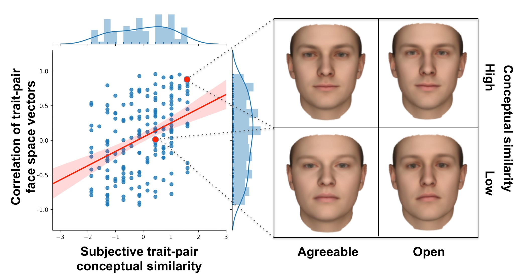
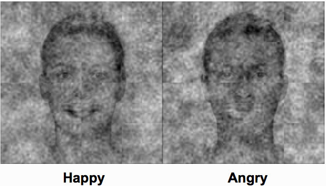
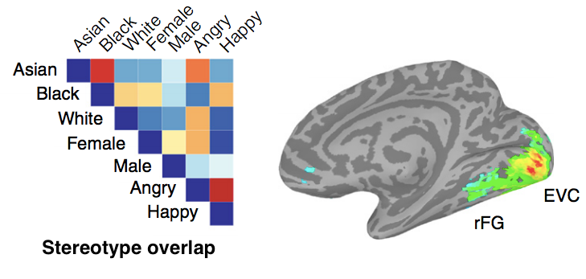
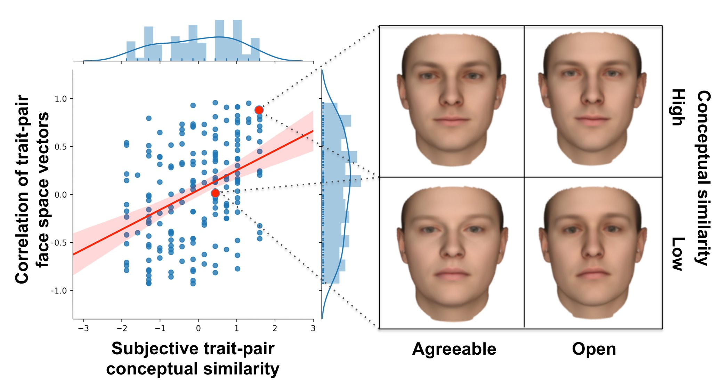
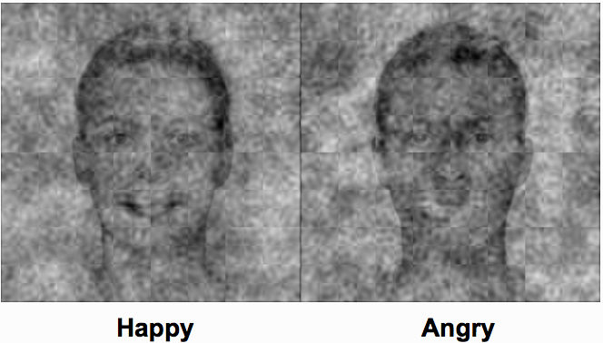
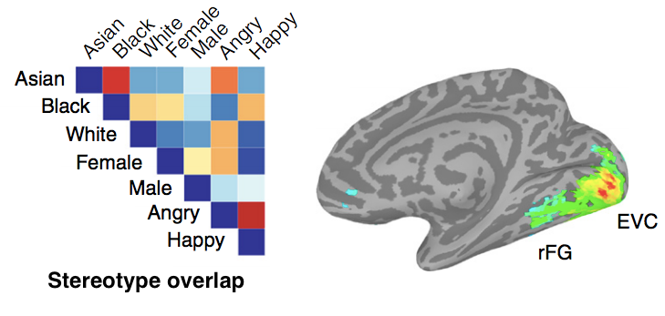

Back to start
Yet we do this so easily - how so?
I study how humans efficiently extract social information, where social perceptions arise as a statistical integration of whatever information is at hand to the perceiver. For instance, to infer someone's intelligence, we may integrate present knowledge of their apparent mood, gender, and our intergroup biases depending on their affiliations. In this fashion my work explores how humans hold rich conceptual maps of how social information correlates in the world (e.g., how intelligence correlates with neuroticism, height, gender, or political party), which are navigated with whatever bottom-up information (e.g., facial cues, gossip) or top-down social factors (e.g., current context, group biases) are present to infer the gamut of social perceptions. In particular, my work bridges behavioral, neuroimaging, and computational methods to develop comprehensive ideas about both the structure and dynamics of these processes.



Research
Humans can effortlessly infer the expanse of social information about one another. Even from a mere glimpse of a face, we rapidly determine others' thoughts, feelings, personality, race, gender, and age —even political and religous affiliation. Whether accurate or wildly inaccurate, these inferences are reliable, commonplace, and occur within a second. This is especially impressive, as we are often operating in the dark as social perceivers. Mental states, traits, and social category memberships are largely hidden variables, in that we rarely observe them directly. Even then, to infer these things, in most social interaction, we are only given so much information about one another, whether an emotional expression, skin pigmentation, brief words, or gossip.Yet we do this so easily - how so?
I study how humans efficiently extract social information, where social perceptions arise as a statistical integration of whatever information is at hand to the perceiver. For instance, to infer someone's intelligence, we may integrate present knowledge of their apparent mood, gender, and our intergroup biases depending on their affiliations. In this fashion my work explores how humans hold rich conceptual maps of how social information correlates in the world (e.g., how intelligence correlates with neuroticism, height, gender, or political party), which are navigated with whatever bottom-up information (e.g., facial cues, gossip) or top-down social factors (e.g., current context, group biases) are present to infer the gamut of social perceptions. In particular, my work bridges behavioral, neuroimaging, and computational methods to develop comprehensive ideas about both the structure and dynamics of these processes.
Trait impressions
In ongoing research, we find trait impressions based on others' facial appearance are structured by our lay theories of how personality functions in others. For instance, our internal beliefs about how personality traits covary in the world (are kind people often intelligent, creative, neurotic?) may underlie how we infer the expanse of personality traits from a face (e.g., inferring intelligence, creativity, and neuroticism from the kind babyishness of a face; Stolier, Hehman, Keller, Walker, & Freeman, 2018 - Proceedings of the National Academy of Sciences). This has important implications for how we understand other people, especially as we may make consequential personality impressions (e.g., intelligence) about others based on what little we know about them (e.g., kindness). Furthermore, these trait associations (e.g., how intelligent a kind person is perceived) may shift in certain contexts (e.g., kindness and intelligence judgements become more negatively related towards females, as negative attitudes towards competent females prominent in the United States; Glick & Fiske, 1996 — JPSP). We recently proposed a framework which summarizes these points, providing a parsimonious account in which trait impressions are the integration of bottom-up perception, and many top-down components (Stolier, Hehman, & Freeman, 2018 - Trends in Cognitive Sciences). Following all of this work, we recently proposed and found that lay theories of others' personality shape trait impressions across domains, for instance, also in familiar person knowledge or group stereotypes (Stolier, Hehman, & Freeman, under review). In fact, lay personality models explain considerable variance in social perception models across these domains (consistently around 50%), providing a parsimonious theoretical perspective on the common structure seen across models of social perception (e.g., trustworthiness and dominance in face impressions, warmth and competence in group stereotype content).
Perceivers who believe agreeable people are often open-minded infer agreeableness and openness more similarly in faces (Stolier, Hehman, Keller, Walker, & Freeman, submitted).
Social categorizations
How do we come to categorize others' race, gender, or age? In recent work, we found social categories that share trait stereotypes are perceived more similarly. For instance, male and black categories share 'dominance' trait stereotypes, and thereby facilitate perception of one another and accordingly overlap in neural representational structure (Stolier & Freeman, 2016 - Nature Neuroscience; Brooks, Stolier, & Freeman, in press - Social Cognition). This suggests perceivers use the presence of other categories in a face, along with knowledge of the traits associated with those categories to perceive any individual social category from a face. This work highlights an important, counter-intuitive route through which trait stereotypes can be activated during perception. In this case, categories perceived from a face (e.g., male) elicit activation of other categories not perceived (e.g., black), which in turn activate stereotypes and evaluations relevant to that other category (for instance, see work on behavioral consequences of this process by Galinsky, Hall, & Cuddy, 2013 — Psychological Science).
People visually represent emotion categories as belonging to specific genders (via reverse correlation task; female cues in happiness, male cues in anger perceptions; figure from a pilot, see Brooks, Stolier, & Freeman, in press - Social Cognition).
Integrative neural networks
Across these many questions, my work combines behavioral, neuroimaging, and computational methods to build a coherent picture of these processes (Stolier & Freeman, 2016 - Psychological Inquiry). Our work has begun to elucidate how 'initial' social perceptions in visual brain regions are actually influenced by many higher-order processes, from stereotypes (via the orbitofrontal cortex; Stolier & Freeman, 2016 - Nature Neuroscience) to cognitive control (via the dorsal anterior cingulate; Stolier & Freeman, 2017 - Journal of Neuroscience). These approaches and insights play a crucial role in our work, both constraining and informing our theoretical perspectives.